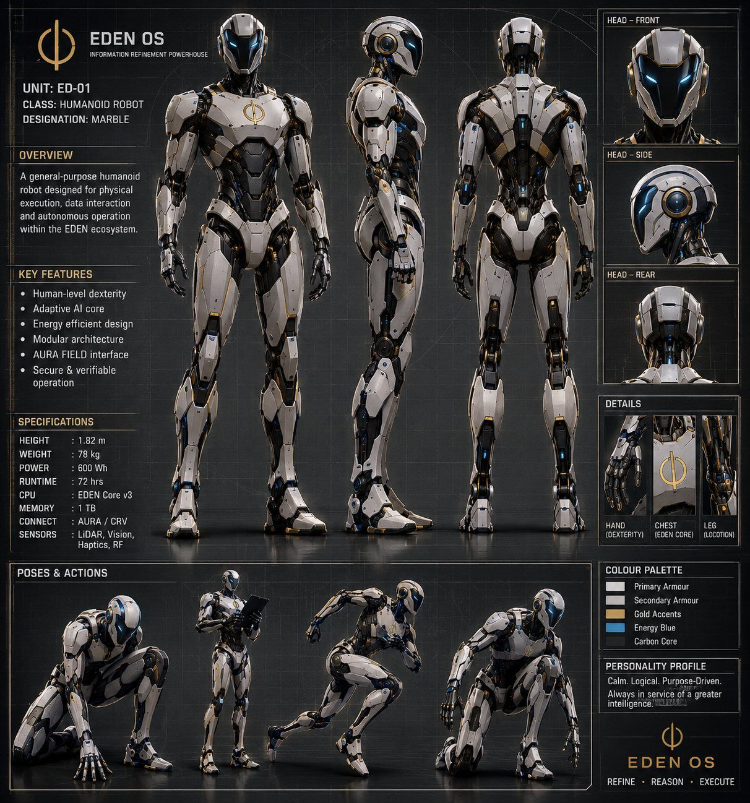
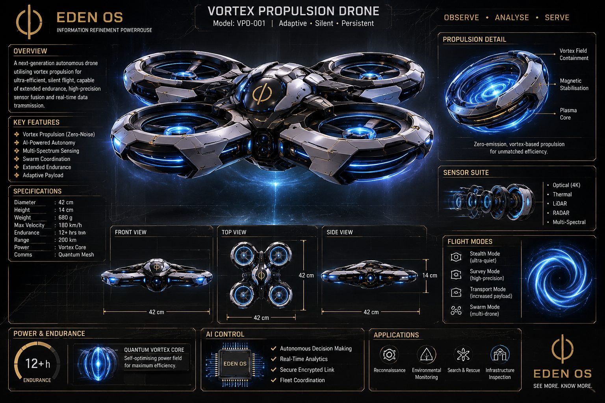

Robots and drones now make their own choices. When something goes wrong, everyone asks three questions: what did it see, what did it decide, and who was in control? EDEN records the answers as they happen, in a record anyone can check and nobody can quietly rewrite. Spin the models, open them up, then try to cheat.
| # | Kind | What happened | Leaf hash |
|---|
The robot and drone are simulated. The cryptography is real: every entry is fingerprinted with SHA-256 on your device, locked into a Merkle tree and, where your browser supports it, signed with Ed25519.
The full record stays on board. Only a tiny seal goes out. Wherever the record ends up, it stays honest, because the seals and witnesses protect it, not the storage.
The machine keeps its own complete record: about 7.5 MB an hour (measured). It never has to leave.
Copied to the fleet's systems whenever the machine docks.
Handed over as an evidence pack anyone can check with a free, open-source tool.
The full record on board, seals of a few hundred bytes over the radio. Ideal when every byte of airtime counts.
A witness keeps a copy of every seal. If anyone turns up later with a different story, the witness refuses it. More independent witnesses means stronger proof.
ED-01 and VPD-001 are EDEN's own concept designs, not products for sale yet. The specs here are realistic engineering targets for machines that could genuinely be built. The recorder inside them is real, and tested today.


An EDEN Evidence Check shows exactly what your current records can and can't prove. Five working days, £495 founding price. Robot and drone makers: joint testing on your platform, no fee either way.
Start an Evidence Check